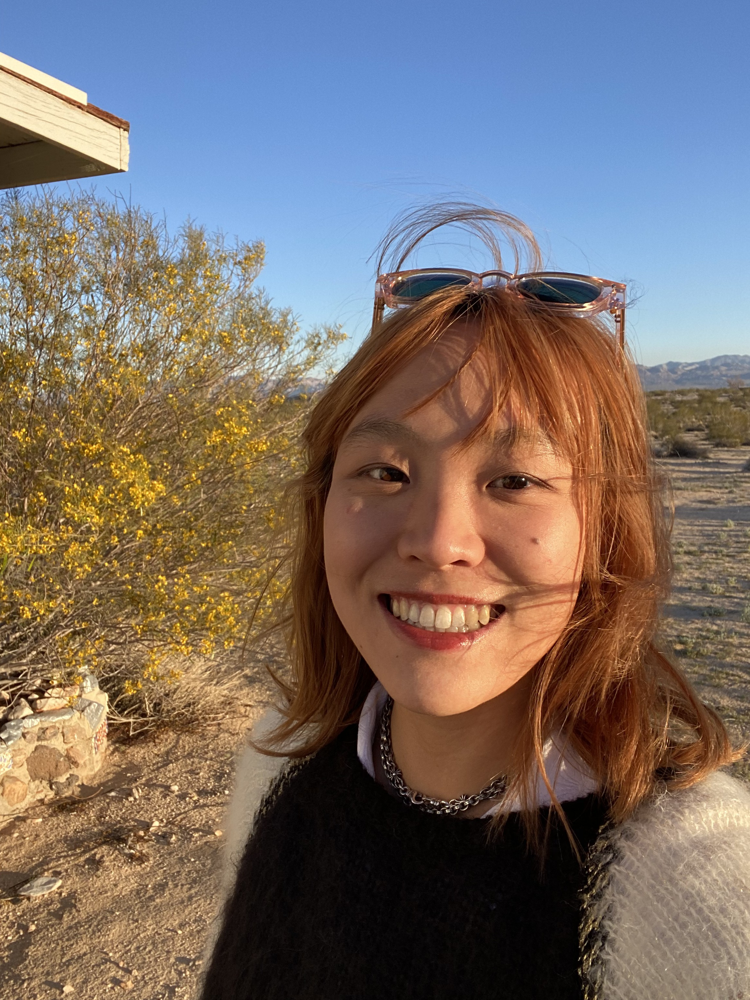

I study human-AI interaction, collective decision-making, and LLM calibration. My work uses large-scale behavioral experiments and computational modeling to understand how people coordinate with AI agents in multi-agent environments, and how trust in these systems forms and breaks down.
I'm a PhD candidate in Cognitive Science at UC Irvine, advised by Mark Steyvers. I've worked with Toyota Research Institute and Honda Research Institute on human-AI teaming, and currently run user studies on RAG-grounded AI avatars with UCI Beall Applied Innovation. Before the PhD I studied cognitive science and German at Vassar, did my master's in Copenhagen, and worked part-time as a software engineer at Microsoft.
I used to do theatre, and I still go whenever I can. I have a soft spot for Shakespeare and a bigger one for sci-fi. Ask me about either.